IT & Project Management Portfolio
Microsoft 365 Power Platform Administrator · MBA Candidate, University of Tennessee, Knoxville
Welcome to my digital portfolio! I create and maintain the systems that IT and business teams rely on day to day whether that's Power Platform applications, automated workflows, or the process frameworks and guides that keep organizations running smoothly. This portfolio walks through a few of those projects and includes mockups of any apps I've built using fake data.
I currently administer the Microsoft 365 Power Platform ecosystem for Knoxville Utilities Board (KUB), supporting over 1,400 users while also building Power Apps, Power Automate flows, and Power BI dashboards that automate processes. Before this role, I helped implement a new SaaS solution for facilities that tracks assets, capital, and operational work. There, I made sure to stand up quality control and efficient asset management frameworks for assets ranging from generators and water towers to HVAC systems and more.
I've always been driven to keep learning and growing, and that's what led me to the Haslam College of Business for my MBA! Here I've been learning how to look at business holistically and better understanding how different departments work and support one another, while also filling in knowledge gaps in finance along the way.
Three Power Platform solutions I've built and supported. Feel free to click any card to expand and use the arrows to browse screenshots!
Fleet Reservation Portal
Power Apps + Power Automate
Lets employees browse and reserve available company vehicles in an app instead of calling the transportation department.
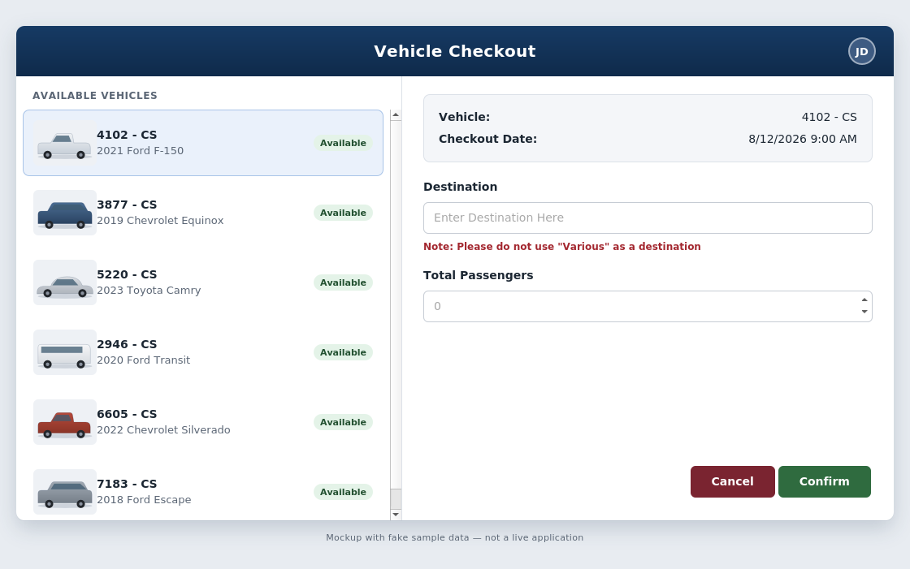
Recreated mockup: company branding, names, and data shown are placeholders.
IT Access Request Hub
Power Apps + Power Automate + ManageEngine integration
One form to request access to any business system, automatically routed, ticketed, and trackable.
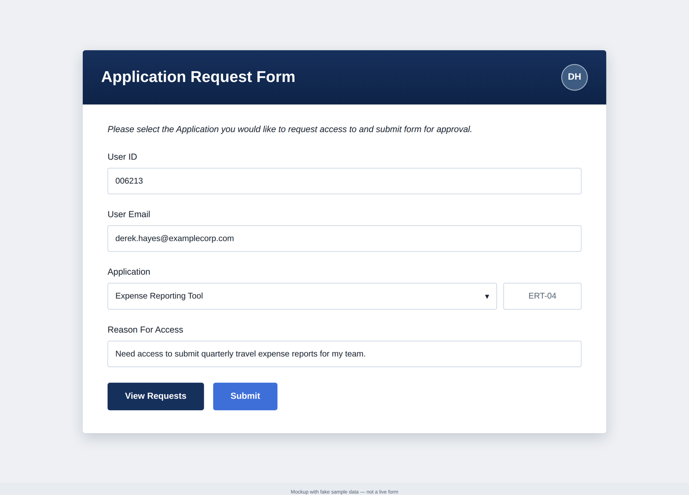
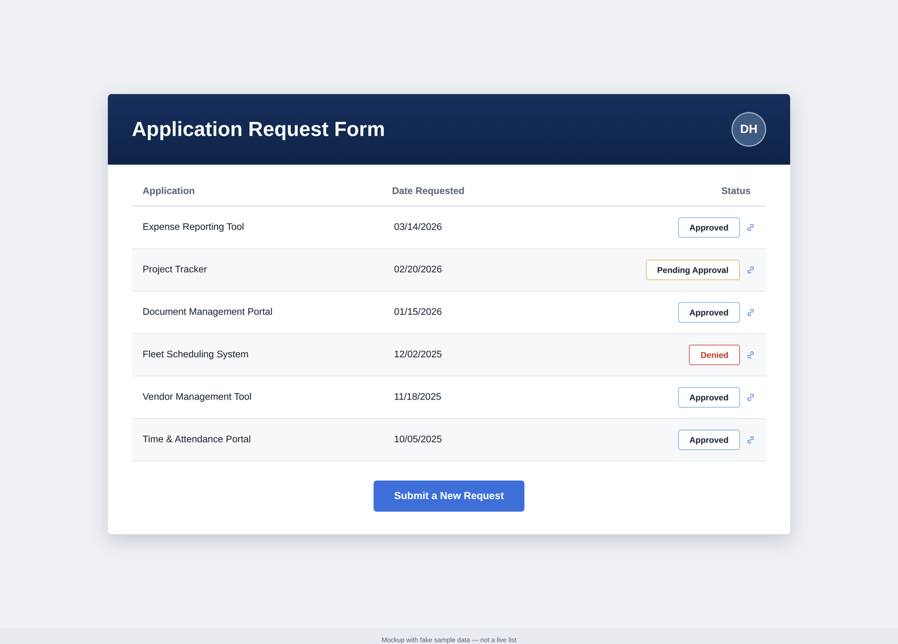
Recreated mockups: names and requests shown are placeholders.
PPE Request & Approval Workflow
Power App · Supported & administered
An org-wide, safety-critical app for requesting and approving PPE.
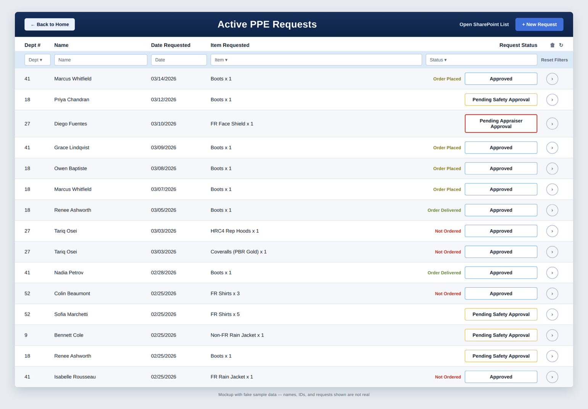
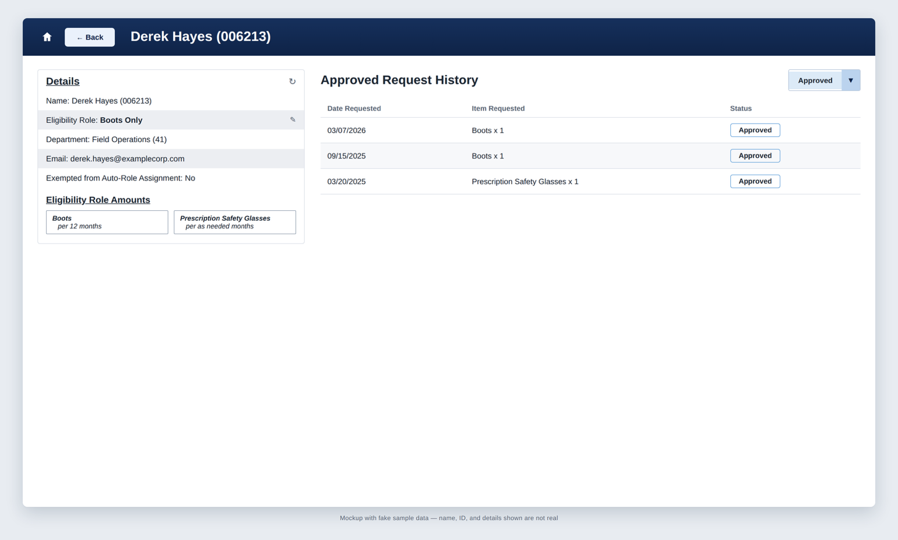
Recreated mockups: names, IDs, and requests shown are placeholders.
Two process-design projects: a SharePoint data migration and a facilities system implementation!
SharePoint Data Migration
Cross-departmental process design + ShareGate technical procedures
Designed and coordinated the process behind a 35+ department SharePoint data migration.
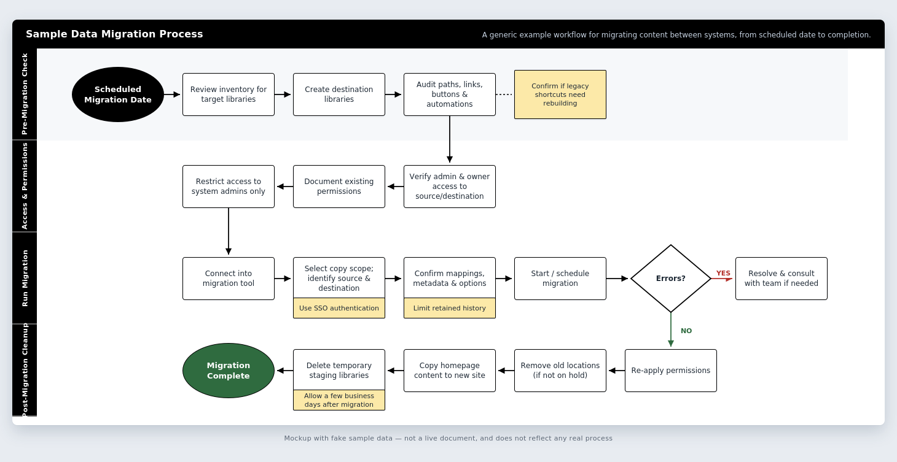
Generic recreation of the migration process flow. Reflects the structure of the real process, not real system names.
Facilities SaaS Solution Implementation & Process Design
SaaS solution implementation · Built from the ground up
Integrated several processes into the new system, from capital and operational work to quality control and asset management frameworks, built from scratch.
Dashboards and technical projects spanning Power BI, Tableau, Python, R, and SQL.
IT Service Desk & Operations Metrics Dashboard
Power BI · Built and maintained at organization
Real-time view of service desk calls, requests, releases, and outages for IT leadership.
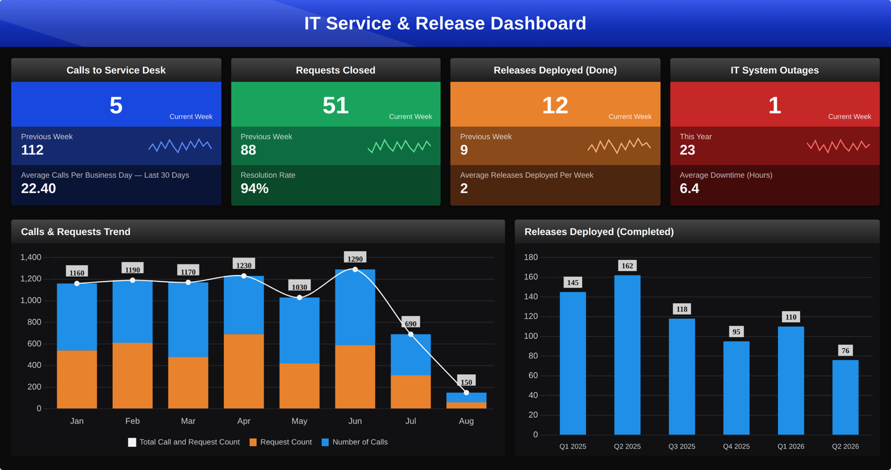
Mockup with sample data, reflecting the real dashboard's layout and metrics.
SharePoint Tenant Storage Metrics Dashboard
Power BI · Built and maintained at organization
Tracks tenant SharePoint storage so the organization can plan capacity, track costs, and monitor sites before hitting a quota.
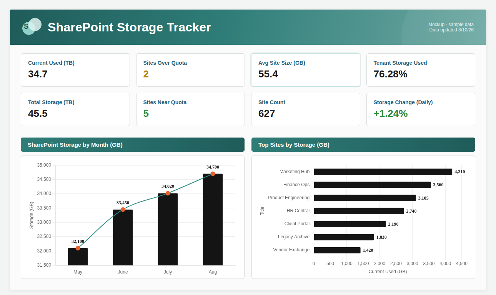
Mockup with sample data, reflecting the real dashboard's layout and metrics.
Ticketing System Request Insights by Team
Power BI · Built and maintained at KUB
Gives each IT team self-service visibility into their own ticket workload and metrics.
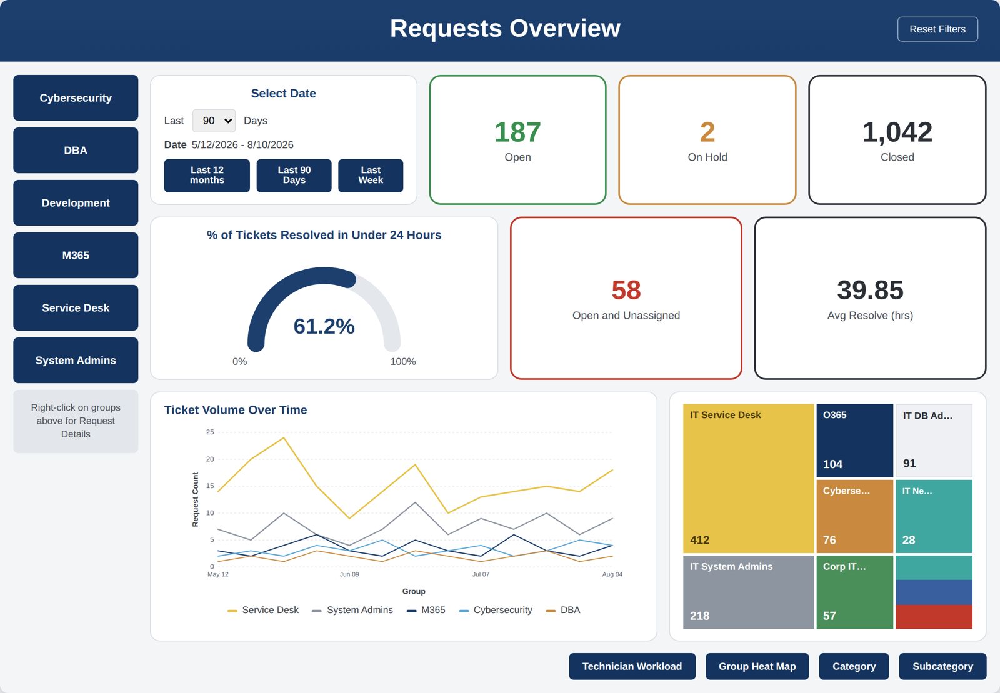
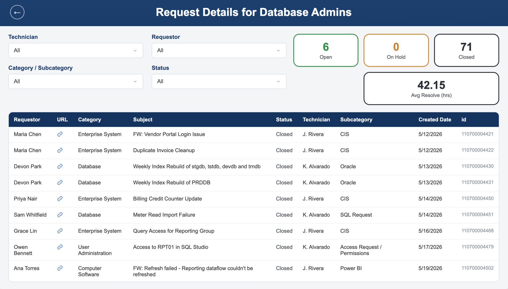
Mockup with sample data, reflecting the real dashboard's layout and metrics.
Utility Emergency Level Dashboard
Power BI · Built and maintained at organization
One real-time, org-wide view of the organization's emergency status, overall and by utility.
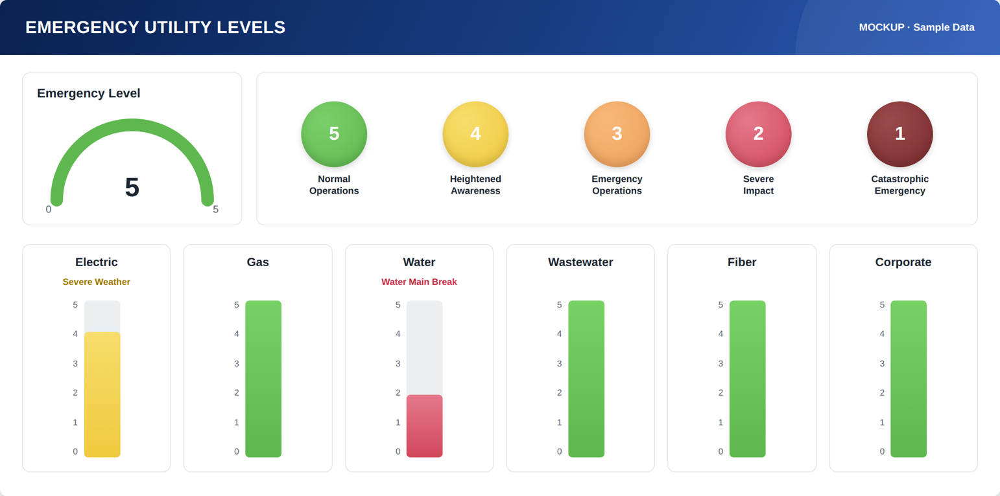
Mockup with sample data, reflecting the real dashboard's layout and metrics.
Movie Recommendation Generator
R (Shiny + arules) · Live app
A live R Shiny app that recommends movies using the same technique behind "customers who bought this also bought…"
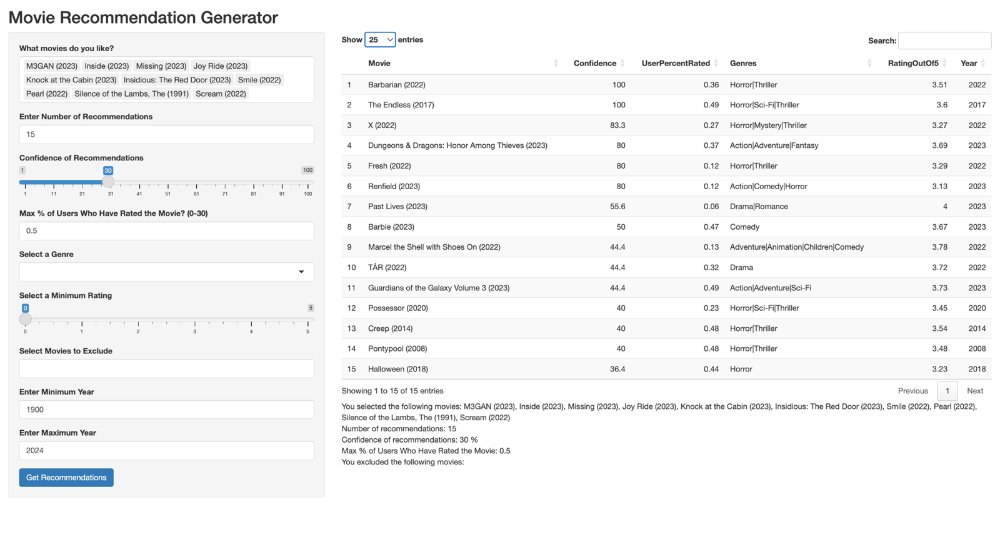
Live results table from the app.
FIFA World Cup Performance Insights Dashboard
Python (Pandas, Dash + Plotly) · Undergrad project
An interactive Python app for exploring 2022 FIFA World Cup match data, built with live callbacks.
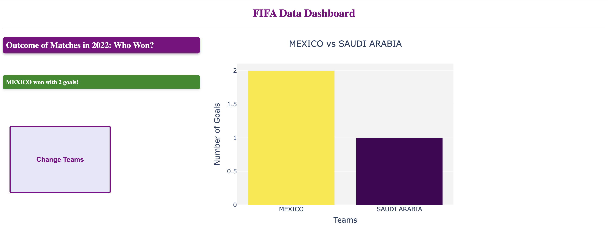
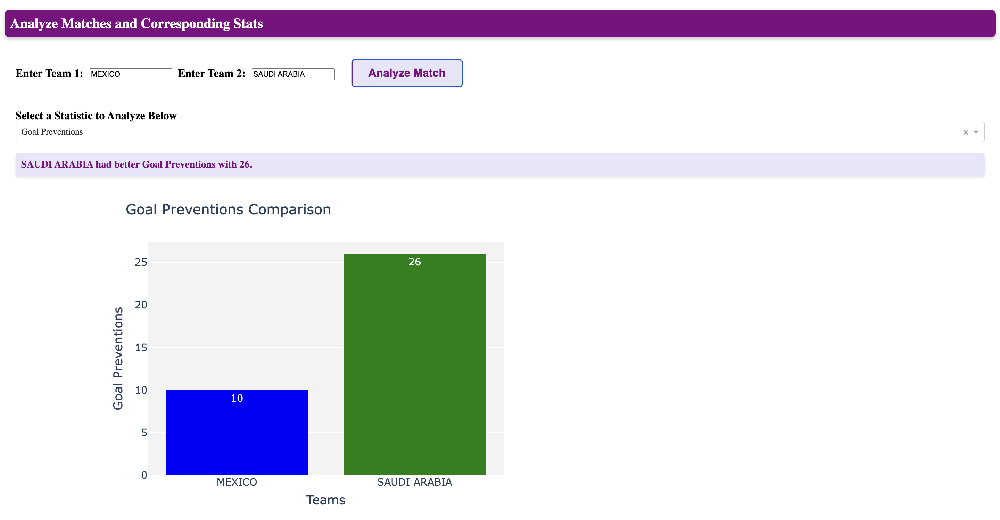
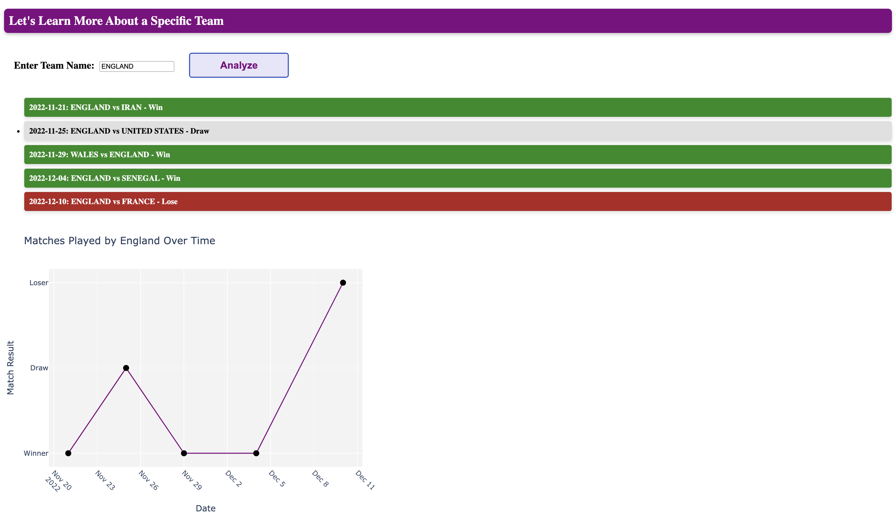
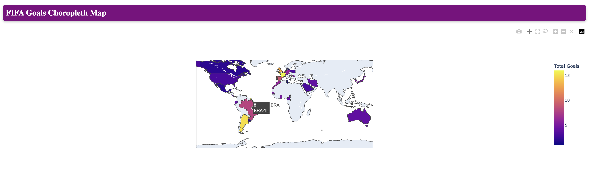
Live screenshots of the app: head-to-head comparison, stat analyzer, team match history, and the goals choropleth map.
Knoxville Track Club Performance Dashboard
Tableau · MBA coursework
Demonstrates which races actually drive the Knoxville Track Club's mission and finances.
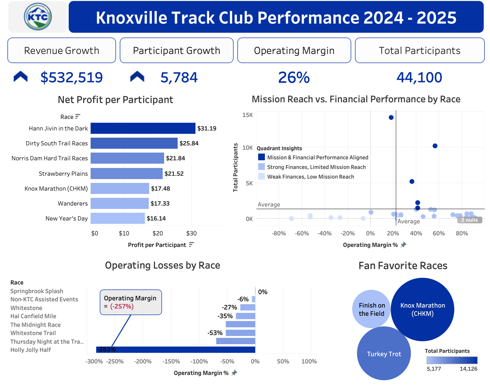
Mockup with sample data, reflecting the real dashboard's layout and metrics.
Healing Horizons Minute Clinic: Database Design & Implementation
SQL + ER modeling · Team project, INMT 342: Introduction to Database Systems
A 20-table healthcare database with 7 SQL views answering real operational questions, built as part of a team.
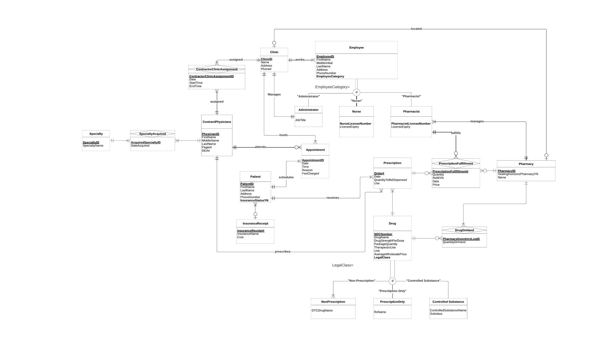
Full ER diagram (Crow's Foot notation), including subtype/supertype modeling for employee roles and drug classifications.